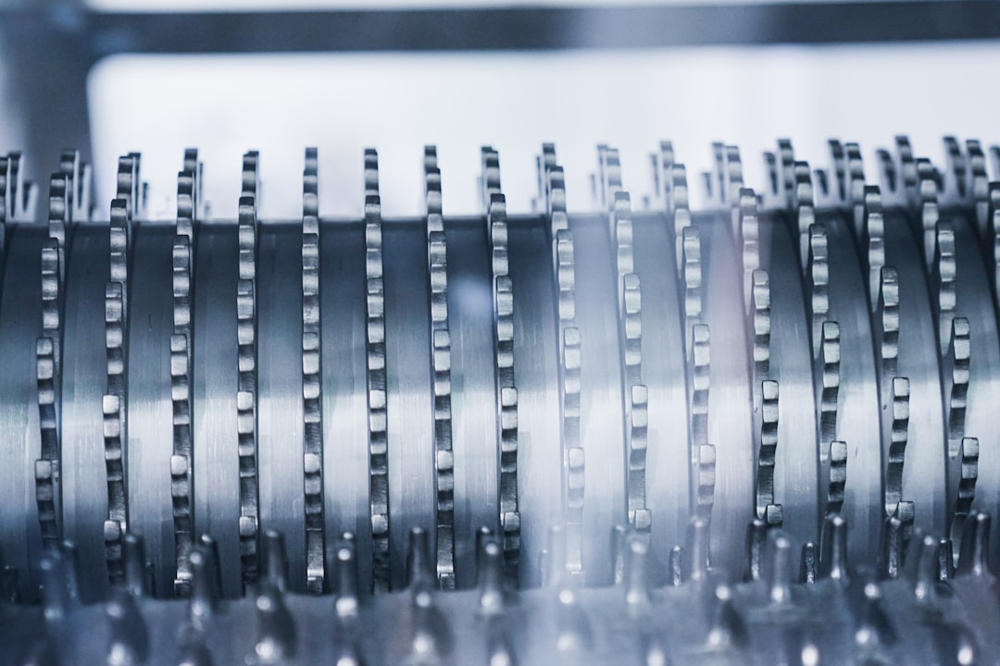

韓 AI·반도체 풀스택 전략, 소재 공백 메울 민간 투자 체계 있나

산업은행은 2025년 AI·반도체 스타트업 15곳을 선정해 기업당 평균 100억~200억 원 규모의 정책 금융을 지원한다고 밝혔다. 지원 대상은 설계(팹리스)·패키징·소프트웨어 중심으로, 소재·공정 스타트업은 선정 기준에서 상대적으로 후순위다. 한경협(한국경제인협회)은 AI·반도체 성장 생태계 구축을 위한 민관 협의체를 2025년 하반기 출범시킨다는 계획이다.
전자신문 보도에 따르면 '한국의 반도체산업 발전 전략 포럼'에서 AI 반도체 풀스택(설계→제조→패키징→소재) 전략이 논의됐으나, 소재 단계의 구체적 투자 규모와 기업명은 공개되지 않았다. 반면 설계(팹리스) 단계 지원에는 전체 논의의 60% 이상이 집중된 것으로 전해졌다.
정부의 소부장 지원 예산은 2025년 기준 1,700억 원으로, 이를 방산·희토류 포함 6개 분야로 나눌 경우 분야당 평균 280억 원 수준이다. 반도체 공정 핵심 소재(포토레지스트·고순도 식각가스·CMP 슬러리) 국산화에 필요한 단일 설비 투자만 500억~1,000억 원 수준인 점을 감안하면, 현재 지원 규모는 상용화 수준에 이르기 전 단계(TRL 4~6)에 머문다.
재외동포신문 보도에 따르면 이재명 대통령이 AI·반도체·데이터센터를 국가전략 산업 삼각축으로 공식 선언하며, 2030년까지 반도체 수출 2,000억 달러 목표를 제시했다. 그러나 이 목표를 달성하기 위한 소재 조달 로드맵—갈륨·게르마늄·네오디뮴 등 핵심 소재의 수입선 다변화 계획—은 선언 이후 6개월이 지난 시점에도 구체적 수치가 공개되지 않고 있다.
풀스택 전략은 '소재 없이는 허공에 뜬 설계'라는 공급망 기본 원칙을 다시 확인시켜 준다. AI 반도체를 설계하고 팹리스를 키워도 공정 소재(고순도 식각가스·포토레지스트)와 패키징 소재(몰딩 컴파운드·기판) 병목이 해소되지 않으면 양산 단계에서 멈춘다. 산은 자금이 팹리스에 집중되는 동안 소재 스타트업은 사각지대에 남는다.
한국 AI·반도체 전략의 실질적 취약점은 민간 자본의 소재 투자 기피 구조다. 소재 스타트업은 매출 발생까지 7~10년, 초기 설비 투자 1,000억 원 이상, 수요처 단일화 리스크가 겹쳐 벤처캐피털이 들어오기 어렵다. 정부 보조금만으로 이 구간을 채울 수 없다면, 수요 기업(삼성전자·SK하이닉스)의 전략적 지분 투자를 의무화하는 구조 개편이 필요하다.
한국판 국부펀드가 2026년 출범 예정이지만, 소재 단계까지 투자 범위를 확장할지는 여전히 불확실하다. 국부펀드 초기 집행 방향이 AI·반도체 '제조 인프라'에 집중될 경우, 소재 공백은 또다시 정책 빈칸으로 남을 가능성이 크다.
삼성전자·SK하이닉스 (수요 기업): 소재 스타트업 전략적 투자 구조화에 성공할 경우, 공급망 내재화와 정부 지원 레버리지를 동시에 확보. SK하이닉스는 이미 소재 스타트업 3곳에 지분 투자를 집행한 것으로 알려졌다.
한국 소재 스타트업 (포토레지스트·CMP 슬러리·식각가스 분야): 정책 자금+전략적 투자자(대기업) 구조 수혜 대상. 단, 수요 기업과의 장기 구매 확약 없이는 기업가치 산정 자체가 어려운 구조.
팹리스 중심 지원 정책 하에서 소재 스타트업: 산은 15곳 지원 풀에서 제외될 경우 민간 자본 유치도 어려워지는 이중 소외 발생. 2025년 기준 국내 소재 스타트업 중 시리즈 B 이상 투자 유치에 성공한 곳은 5곳 미만으로 추정된다.
중소 소부장 기업 (TRL 4~6 단계): 분야당 280억 원 지원으로는 상용화 수준 설비 구축 불가. 정부 지원이 끊기는 시점에 민간 자금 브릿지가 없으면 기술 개발 중단 리스크.
소재 기업이 이 구간을 돌파하는 현실적 경로는 수요 기업과의 JDA(공동개발협약) + 물량 우선공급 확약의 동시 체결이다. 삼성전자·SK하이닉스가 '소재 확약'을 제공하면 산은 정책 자금 우선 배정 조건이 달라진다. 기업 구매담당자라면 소재 스타트업과의 협상에서 '물량 확약'을 카드로 활용해 지분 투자 조건을 유리하게 가져오는 것이 실질적 전략이다.
개인 투자자 관점에서는 '풀스택' 담론이 나올 때마다 설계(팹리스) 주가만 오르는 패턴이 반복되어 왔다. 실제 밸류체인에서 마진이 높은 구간은 진입 장벽이 높은 소재 단계다. 포토레지스트(동진세미켐·SK머티리얼즈)·CMP 슬러리(케이씨텍)처럼 수요 기업 인증을 이미 받은 소재사 주가가 저평가 구간에 있을 때를 주목해야 한다.
실제 조달 현장에서는 — 대형 팹(fab) 구매팀이 소재 국산화 전환을 선언해도 품질 인증 기간(6~18개월)이 끝나기 전까지는 기존 해외 공급사 물량을 유지하는 이중 계약이 표준이다. 소재 스타트업이 실제 양산 납품으로 전환되는 시점은 정부 발표보다 평균 12~18개월 늦게 온다는 점을 감안해 투자 타이밍을 설정해야 한다.
이 포스팅은 쿠팡 파트너스 활동의 일환으로 수수료를 제공받습니다.